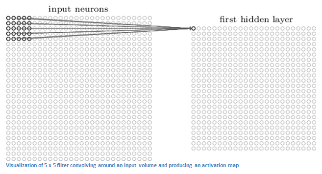
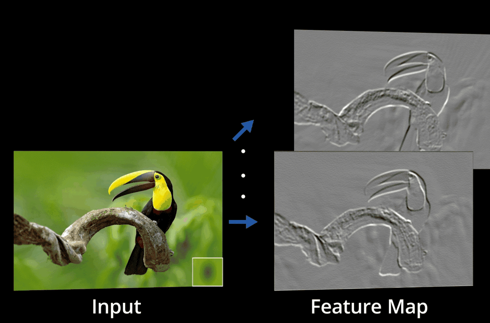

Procesamiento del Lenguaje Natural y Reconocimiento del Habla · Clase 05
1.1. - Redes Convolucionales Teoría Simplificada
Contenido convertido sin ejecutar Python. Se conservan las salidas guardadas; las figuras matemáticas sustituidas y los gráficos de PE están identificados en el registro de revisión.
Las redes convolucionales son un tipo de red neuronal que se utiliza principalmente para procesar imágenes y videos. A diferencia de las redes neuronales estándar, las redes convolucionales utilizan convoluciones para extraer características importantes de las imágenes. Las convoluciones son operaciones matemáticas que se utilizan para aplicar filtros a una imagen y extraer características específicas de ella.
Ahora hablemos sobre los filtros. Los filtros son matrices que se utilizan para aplicar convoluciones a las imágenes. Estos filtros se aplican en diferentes partes de la imagen y se utilizan para extraer características específicas. Por ejemplo, si estás trabajando con una imagen de un coche, puedes aplicar un filtro que detecte las ruedas del coche. Una vez que se aplica este filtro, la red neuronal puede detectar las ruedas del coche en cualquier otra imagen que se le presente.
El padding se utiliza para mantener el tamaño de la imagen después de aplicar las convoluciones. Se utiliza cuando se quiere que la imagen resultante sea del mismo tamaño que la imagen original.
El max pooling, por otro lado, se utiliza para reducir el tamaño de la imagen. Este proceso se realiza aplicando una operación máxima a pequeñas áreas de la imagen.
Los strides son el número de píxeles que se mueven el filtro por cada convolución. Si un stride es igual a 1, el filtro se mueve un píxel a la vez. Si el stride es igual a 2, el filtro se mueve dos píxeles a la vez. El tamaño del kernel se refiere al tamaño del filtro que se utiliza para aplicar la convolución a la imagen.
El mapa de características se refiere a la salida de la convolución de un filtro. Cuando se aplica un filtro a una imagen, se produce una salida. Esta salida se conoce como mapa de características. En general, los mapas de características se utilizan para detectar patrones específicos en las imágenes.
Cuando se trabaja con convoluciones con múltiples filtros, cada filtro extrae diferentes características de la imagen. Por lo tanto, la salida de cada filtro es un mapa de características diferente. Estos mapas de características se apilan para formar un tensor tridimensional.
Los diferentes shapes se refieren al tamaño y forma de los tensores que se utilizan en las redes neuronales. El cálculo de shapes es importante porque es necesario asegurarse de que los tensores se ajusten correctamente a las capas de la red neuronal. Esto es especialmente importante cuando se trabaja con redes convolucionales, ya que hay muchas capas y tensores involucrados.
Si bien la visión comienza en los ojos, la interpretación real de lo que vemos ocurre en el cerebro, en la corteza visual primaria.
Cuando ves un objeto, los receptores de luz en tus ojos envían señales a través del nervio óptico hacia la corteza visual primaria, donde se procesa la entrada. La corteza visual primaria da sentido a lo que el ojo ve.
1.1. Convolución
La convolución es un proceso matemático que combina información de una imagen (o matriz de entrada) con un conjunto de filtros (también llamados núcleos) para producir una matriz de salida (también llamada mapa de características). Esta operación ayuda a extraer características relevantes de los datos de entrada.
En matemáticas, la convolución entre dos funciones, se define como
Siempre que tenemos objetos discretos, la integral se convierte en una suma**. Por ej., para los vectores del conjunto de vectores de dimensión infinita sumables cuadrados con índice que se ejecuta sobre obtenemos la siguiente definición:
Una red MLP tiene la siguiente estructura:
Luego, una red Convolucional tiene la siguiente estructura:
Una computadora ve una imagen como una matriz de números con forma (filas x columnas x número de canales). Cualquier imagen del mundo real tendría al menos píxeles.
Entonces, la pregunta es: ¿Podemos simplemente aplanar la imagen en una sola matriz 1D larga? Si hacemos los cálculos con una imagen de , tendremos una matriz 1D de tamaño: . Es decir, El número de pesos requeridos en la primera capa oculta sería de más de tres millones. Lidiar con una cantidad tan grande de parámetros requiere muchas neuronas y puede llevar a un sobreajuste.
Por eso, a diferencia de los MLP o redes neuronales simples, las redes neuronales convolucionales miran un parche de una imagen a la vez y avanzan de esta manera para obtener información completa. Involucra muy pocas neuronas con menos parámetros para escanear una imagen completa y aprender características esenciales.
La Capa Convolucional es el primer paso en el proceso de la extracción de características valiosas de una imagen. Una capa de convolución tiene varios filtros que realizan la operación de convolución. Cada imagen se considera como una matriz de valores de píxeles.
Supongamos que la entrada es **una matriz de valores de píxeles de . Ahora, la mejor manera de explicar una capa de convolución es imaginar una linterna que está iluminando la esquina superior izquierda de la imagen. Digamos que la luz que emite esta linterna cubre un área de píxeles. Y ahora, imaginemos que esta linterna se desliza por todas las áreas de la imagen de entrada.
En términos de ML, a esta linterna se le llama filtro (o a veces se le llama neurona o núcleo o kernel) y la región que está iluminando se llama campo receptivo. Ahora, este filtro también es una matriz de números (los números se llaman pesos o parámetros). Una nota muy importante es que la profundidad de este filtro debe ser la misma que la profundidad de la entrada (esto asegura que la matemática funcione), por lo que las dimensiones de este filtro son .
Ahora, tomemos como ejemplo la primera posición en la que se encuentra el filtro. Sería la esquina superior izquierda. A medida que el filtro se desliza, o convoluciona, alrededor de la imagen de entrada, está multiplicando los valores del filtro con los valores originales de píxeles de la imagen (también conocido como multiplicaciones de elementos). Estas multiplicaciones se suman todas juntas (matemáticamente hablando, esto sería un total de 75 multiplicaciones). Ahora tienes un solo número.Este número solo representa cuando el filtro está en la esquina superior izquierda de la imagen. Ahora, repetimos este proceso para cada ubicación en el volumen de entrada.
El siguiente paso sería mover el filtro hacia la derecha en una unidad, luego hacia la derecha nuevamente en una unidad, y así sucesivamente. Cada ubicación única en el volumen de entrada produce un número. Después de deslizar el filtro sobre todas las ubicaciones, queda una matriz de números de 28 x 28 x 1, que llamamos mapa de activación o mapa de características**.

Se obtiene una matriz de ya que, el tamaño de la salida está dado por el tamaño de la matriz de entrada (o la imagen) menos el tamaño del kernel de convolución , es decir:
Entonces en nuestro caso, .
Este es el caso ya que necesitamos suficiente espacio para "desplazar" el núcleo de convolución a través de la imagen (se puede mantener el tamaño sin cambios rellenando la imagen con ceros alrrededor de su límite para que haya suficiente espacio para desplazar el núcleo).

1.3.1. Capa Convolucional con un Solo Filtro
Para un mayor entendimiento, veamos un ejemplo más detallado. Supongamos que la imagen de entrada tiene un tamaño de . El tamaño espacial de un filtro es una elección de diseño, pero tiene que tener una profundiad de tres para coincidir con la profundidad de la imagen de entrada. En este caso, supongamos que usamos un único filtro de tamaño .
El filtro contiene tres núcleos (kernels), donde cada kernel tiene nueve parámetros entrenables y un total de pesos entrenables en este filtro , más un solo ´termino de sesgo, para un total de 28 parámetros entrenables. Debido a que hemos elegido solo un filtro, la profundidad de nuestra salida es uno, lo que significa que producimos solo un mapa de activación de canal único que se muestra.
Cuando convolucionamos este filtro único (de 3 canales) con la entrada (también de 3 canales), la operación de convolución se realiza para cada canal por separado. La suma ponderada de los tres canales más un término de sesgo se pasa luego a través de una función de activación cuya salida se representa como un solo número en el mapa de activación de salida (que se muestra en azul).
Entonces, para resumir, el número de canales en un filtro debe coincidir con el número de canales en la entrada. Y el número de filtros en una capa convolucional (una elección de diseño) dicta el número de mapas de activación que son producidos por la capa convolucional.
En la práctica, las capas convolucionales a menudo contienen muchos filtros. Para reforzar las implicaciones de esto, considere una capa convolucional con 32 filtros. Tal capa producirá 32 mapas de activación. Una capa convolucional adyacente (subsiguiente) podría contener cualquier número de filtros (una elección de diseño). Pero el número de canales en esos filtros debe ser de 32 para que coincida con la profundidad de la entrada (la salida de la capa anterior).
1.3.2. Capa Convolucional con dos Filtros
Ahora, podemos generalizar el ejemplo anterior. Habíamos mencionado que la entrada tenía una profundidad de tres, pero esto no necesariamente corresponde a canales de color. Simplemente significa que tenemos un tensor de entrada que tiene tres canales. Cuando nos refereimos a la entrada, no necesariamente nos referimos a la entrada a la red neuronal. Sino a la entrada a esta capa convolucional que podría representar la salida de una capa anterior en la red.
Ahora, supongamos que decidimos usar dos filtros. Debido a que la profundidad de la entrada es tres, cada filtro debe tener una profundidad de tres. Esto significa que ahora hay pesos entrenables, ya que, los filtros y contienen tres kernels de , es decir pesos entrenables. Y, dado que ahora tenemos otro filtro, la expresión nos da la cantidad total de parámetros entrenables (sumando el término de sesgo de ambos filtros y , tenemos un total de parámetros entrenables).
En resumen, debido a que la profundidad de la entrada es tres, cada filtro debe tener una profundidad de tres. Esto significa que hay 54 pesos entrenables porque cada filtro contiene 27 pesos . También tenemos un término de sesgo para cada filtro, por lo que tenemos un total de 56 parámetros entrenables.
1.3.3. Aprendizaje de Filtros para Detectar Estructuras
Podemos pensar en cada filtro como una fuente que alberga nuevo conocimiento de algo especial y único sobre los datos de entrada. Estos pesos (números) se aprenden durante el proceso de entrenamiento. Los canales individuales en los mapas de activación en cualquier punto de la red representan características extraídas de la imagen de entrada (tensor de entrada, ya que no necesariamente tiene que ser una imagen).
En la imagen de arriba, tenemos una capa convolucional con tres filtros. Cada filtro aprende a detectar diferentes elementos estructurales (es decir, líneas horizontales, líneas verticales y líneas diagonales). Para ser más precisos, estas "líneas" representan estructuras de bordes en una imagen. En los mapas de activación de salida, enfatizamos las neuronas altamente activadas asociadas con cada filtro.
1.4. Capa ReLU
Una vez que se extraen los mapas de características, el siguiente paso es moverlos a una capa ReLU.
ReLU realiza una operación por elemento y establece todos los píxeles negativos en . Introduce una no linealidad a la red y la salida generada es un mapa de características rectificado.
1.5. Capa de Max Pooling
En las arquitecturas de redes neuronales convolucionales, es típico que la dimensión espacial de los datos se reduzca periódicamente mediante capas de pooling.
Estas capas se utilizan típicamente después de una serie de capas convolucionales para reducir el tamaño espacial de los mapas de activación. Puedes pensar en esto como una forma de resumir las características de un mapa de activación.
El uso de una capa de pooling reducirá el número de parámetros en la red porque el tamaño de entrada a las capas subsiguientes se reduce. Este es un efecto deseable porque los cálculos necesarios para el entrenamiento también se reducen. Además, el uso de menos parámetros a menudo ayuda a mitigar los efectos del sobreajuste.
El Pooling es una forma de reducir el tamaño que utiliza un filtro deslizante 2D (sliding filter). El filtro pasa por la sección de entrada de acuerdo con un parámetro configurable llamado "stride" (paso).
El stride es el número de píxeles que el filtro se mueve a través de la sección de entrada de una posición a la siguiente. Hay dos tipos de operaciones de pooling: el promedio y el máximo. Sin embargo el max pool es el más común.
Para cualquier ubicación de filtro dada, los valores correspondientes en la sección de entrada se pasan a través de una operación . El valor máximo se registra en la salida. Como se muestra en el ejemplo anterior, tenemos una sección de entrada de 4x4, un filtro de 2x2 y un stride de dos. La salida correspondiente es, por lo tanto, una representación reducida a 2x2 de la sección de entrada.
A diferencia de los filtros convolucionales, el filtro en una capa de pooling no tiene parámetros entrenables. El filtro especifica el tamaño de la ventana utilizada para realizar la operación max().
La capa de pooling utiliza varios filtros para identificar diferentes partes de la imagen, como bordes, esquinas, cuerpo, plumas, ojos y pico. Fig. tomada de link.
Luego, la capa de pooling se aplica a cada mapa de activación rectificado.
Para simplificar la visualización, en el siguiente ejemplo mostramos un bloque convolucional muy simple, que consta de una capa convolucional que tiene un solo filtro. La entrada a la capa es la imagen de entrada, que en el caso de la arquitectura VGG-16, la entrada es una imagen en color indicada por los tres canales RGB. Después de la capa convolucional, se agrega una capa de max pooling para reducir la dimensionalidad espacial del mapa de activación.
La única diferencia entre este diagrama y los bloques convolucionales utilizados en arquitecturas CNN como VGG-16 es que generalmente hay dos o tres capas convolucionales consecutivas seguidas de una capa de max pooling. Y las capas convolucionales generalmente contienen al menos 32 filtros.
Las capas totalmente conectadas (densas) en una arquitectura CNN transforman características en probabilidades de clase. En el caso de VGG-16, la salida del último bloque convolucional (Conv-5) es una serie de mapas de activación con forma (7x7x512). Para referencia, hemos indicado el número de canales en puntos clave de la arquitectura.
Antes de que los datos de la última capa convolucional en el extractor de características puedan fluir a través del clasificador, deben aplanarse a un vector unidimensional de longitud 25088 . Después de aplanarlos, esta capa unidimensional se conecta completamente a la capa FC-6.
1.7. Capa de Normalización por Lote (Batch Normalization - Batch Norm)
En BatchNorm2d, cada canal se normaliza con estadísticas agregadas sobre los ejes de lote y posiciones espaciales, y luego se aplica una transformación aprendida:
La activación ReLU, cuando se usa después, es una operación separada. En evaluación, con track_running_stats=True, se utilizan estadísticas acumuladas. Con track_running_stats=False, se siguen usando las del lote. BatchNorm suele facilitar la optimización y puede tener un efecto regularizador, pero no garantiza evitar el sobreajuste.
Esquema propio de reemplazo. La referencia de la ilustración original se conserva debajo.
En la fig. de arriba, el superíndice se corresponde al ésimo dato en el minilote, el superíndice indica la ésima capa en la red, y el subíndice indica la -ésima dimensión en una capa dada en la red. En algunos lugares, se ha omitido el superíndice o el subíndice para simplificar la notación.
La normalización por lotes se realiza individualmente en cada unidad oculta. Tradicionalmente, la entrada a una capa pasa por una transformación afín que luego se pasa a través de una no linealidad como ReLU o sigmoid para obtener la activación final de la unidad. Entonces,
Pero cuando se utiliza la normalización por lotes con una transformación BN, se convierte en
El sesgo ahora se puede ignorar porque su efecto se incluye en el parámetro de desplazamiento .
Las cuatro ecuaciones mostradas en la Figura 4 hacen lo siguiente.
Calculan la media del mini-lote.
Calculan la varianza del mini-lote.
Calculan restando la media de y posteriormente dividiendo por la desviación estándar . Se agrega un número pequeño, épsilon , al denominador para evitar la división por cero.
Calculan multiplicando con una escala y agregando un desplazamiento y usan en lugar de como entrada de la no linealidad (por ejemplo, la entrada de ReLU). Los dos parámetros y se aprenden durante el proceso de entrenamiento junto con los parámetros de peso .
1.8. Implementación de la Arquitectura VGG-16 Reducida
A continuación, vamos a implementar una versión reducida de la arquitectura VGG-16. En este caso, la arquitectura tendrá la siguiente estructura:
En primer lugar, definimos la capa para tener 32 filtros. El tamaño del kernel para cada filtro es 3 (que se interpreta como 3 × 3). Usamos una opción de relleno llamada same, que rellenará el tensor de entrada para que la salida de la operación de convolución tenga el mismo tamaño espacial que la entrada. Esto no es obligatorio, pero se usa comúnmente. Si no especifica explícitamente esta opción de relleno, el comportamiento predeterminado no tiene relleno y, por lo tanto, el tamaño espacial de la salida de la capa convolucional será ligeramente más pequeño que el tamaño de entrada. Utilizamos una función de activación ReLU en todas las capas de la red, excepto en la capa de salida.
Para la primera capa convolucional, necesitamos especificar la forma de la entrada, pero para todas las capas subsiguientes, esto no es necesario ya que la forma de la entrada se calcula automáticamente en función de la forma de la salida de las capas anteriores. Por lo tanto, tenemos dos capas convolucionales con 32 filtros cada una, seguidas de una capa de MaxPooling con un tamaño de ventana de (2x2), por lo que la forma de salida de este primer bloque convolucional es (16x16x32).
A continuación, tenemos el segundo bloque convolucional, que es casi idéntico al primero, con la excepción de que tenemos 64 filtros en cada capa convolucional en lugar de 32, y finalmente, el tercer bloque convolucional es una copia exacta del segundo bloque convolucional.
# Descargar el conjunto de datos CIFAR-10train_set=datasets.CIFAR10(root='./data',train=True,download=True,transform=transforms.ToTensor())test_set=datasets.CIFAR10(root='./data',train=False,download=True,transform=transforms.ToTensor())# Definir los cargadores de datostrain_loader=torch.utils.data.DataLoader(train_set,batch_size=32,shuffle=True)test_loader=torch.utils.data.DataLoader(test_set,batch_size=32,shuffle=False)
Downloading https://www.cs.toronto.edu/~kriz/cifar-10-python.tar.gz to ./data/cifar-10-python.tar.gz
# Entrenamiento de la red neuronalforepochinrange(10):running_loss=0.0fori,datainenumerate(train_loader,0):inputs,labels=dataoptimizer.zero_grad()outputs=model(inputs)loss=criterion(outputs,labels)loss.backward()optimizer.step()running_loss+=loss.item()ifi%100==99:print('[%d, %5d] loss: %.3f'%(epoch+1,i+1,running_loss/100))running_loss=0.0# Visualización de los filtros aprendidos en la primera capa convolucional# fig = plt.figure(figsize=(8, 8))# for i in range(64):# ax = fig.add_subplot(8, 8, i + 1)# ax.imshow(net.features[0].weight[i].detach().cpu().numpy())# plt.axis('off')# plt.show()